library(TreatmentPatterns)
computePathways(
cohorts = cohorts,
cohortTableName = "cohort_table",
cdm = cdm,
minEraDuration = 30,
eraCollapseSize = 30,
filterTreatments = "First")Treatment patterns / pathways
Biostat 218
1 Introduction
In these lectures we will learn:
What a treatment pathway is and why we characterize them
How OHDSI first standardized treatment pathways across an international network
Which design choices turn messy drug exposures into pathways
How the
TreatmentPatternspackage implements these choicesAn extended example: antihypertensive pathways among U.S. Veterans
2 Treatment pathways
A treatment pathway is the ordered sequence of treatments that a patient receives after some index event (often a new diagnosis)
Which treatment do patients start on?
What do they switch to or add next?
How long do they stay on each treatment?
How do these patterns differ over time, across locations and between data sources?
ImportantA characterization question
Treatment pathways describe what is happening in clinical practice
- No comparison, no causal claim
- Often the first step in designing an estimation or prediction study
3 Where pathways sit in OHDSI
Recall our three analytic use-cases
Characterization: disease natural history, incidence, treatment utilization
Population-level effect estimation
Patient-level prediction

4 Why do we need them?
Guidelines tell us what should happen; pathways tell us what does happen
Trial design: what are the current therapies that a new drug should be compared against?
Generalizability: do trial populations and practices match the real world?
Quality: is practice converging on guideline-recommended first-line therapy?
Study design: is my comparator actually used as a first-line (or second-line) drug?
TipLink to causal inference
Choosing an active comparator for a new-user cohort design starts with knowing which drugs are used at the same point in the pathway
5 Characterizing treatment pathways at scale
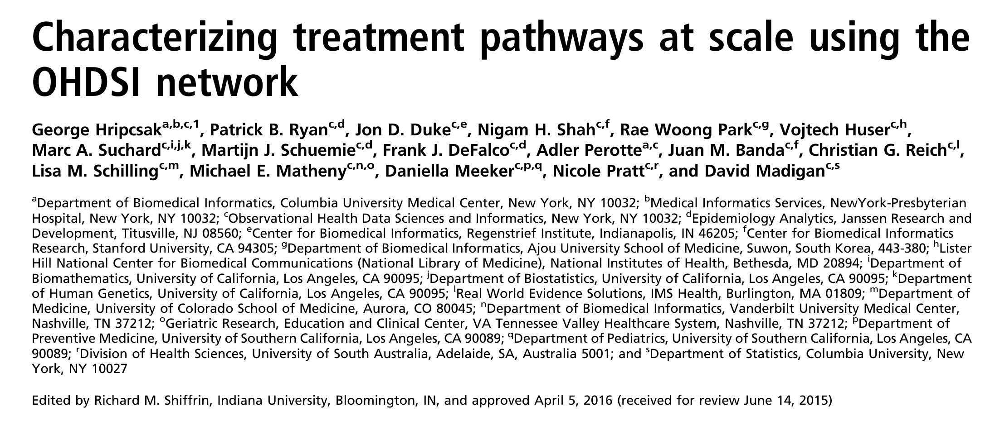
ImportantA first for OHDSI
- First large-scale OHDSI network study
- Introduced a standardized definition of a treatment pathway that runs unchanged at every site
6 The OHDSI network (in 2016)
11 data sources from 4 countries, covering about 250 million patients
| Source | Country | Type | Patients (millions) |
|---|---|---|---|
| AUSOM | South Korea | EHR | 2 |
| CCAE | US | Claims | 119 |
| CPRD | UK | EHR | 11 |
| CUMC | US | EHR | 4 |
| GE | US | EHR | 33 |
| INPC | US | EHR + claims | 15 |
| JMDC | Japan | Claims | 3 |
| MDCD | US | Claims | 17 |
| MDCR | US | Claims | 9 |
| OPTUM | US | Claims | 40 |
| STRIDE | US | EHR | 2 |
All mapped to the OMOP common data model
Distributed: patient-level data stay behind each firewall; only aggregate results are shared
7 Three diseases
| Disease | Treatments | Diagnosis | Exclusions |
|---|---|---|---|
| Type 2 diabetes | Drugs used in diabetes | Diabetes mellitus | Pregnancy, type 1 diabetes |
| Hypertension | Antihypertensives, diuretics, vasodilators, beta blockers, calcium channel blockers, renin-angiotensin agents | Hyperpiesis | Pregnancy |
| Depression | Antidepressants | Depressive disorder | Pregnancy, bipolar I disorder, schizophrenia |
Drug classes come from ATC; diagnoses from SNOMED
Pathways are sequences of ingredients (e.g. metformin, lisinopril)
TipStandardized vocabularies at work
One concept set, defined once, identifies the same drugs and diagnoses in Korean, Japanese, UK and US data
8 A standardized pathway definition
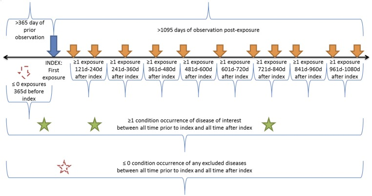
Index: first exposure to any relevant medication
At least 1 year of observation before index (new users)
At least 3 years of continuous treatment after index: an exposure in every 120-day window
At least 1 diagnosis of the disease, and none of the exclusion diagnoses
Pathway: the ordered sequence of distinct medications over those 3 years
9 Results: type 2 diabetes
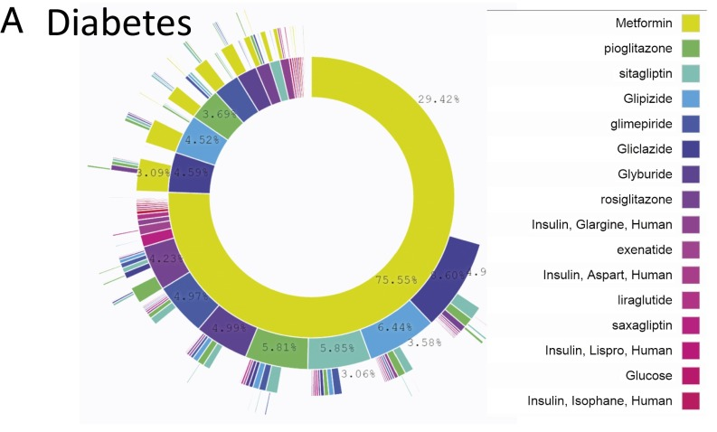
Inner ring: first medication; next ring: second medication …
About three-quarters of patients start on metformin
29% take only metformin over 3 years
Practice matches the guideline-recommended first-line therapy
10 Results: hypertension
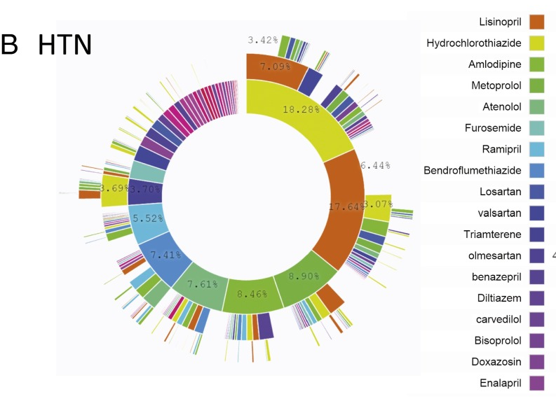
No dominant first-line medication
Hydrochlorothiazide is slightly the most common starter
Lisinopril is the most common sole therapy
Many more medications (and classes) in play
11 Results: depression
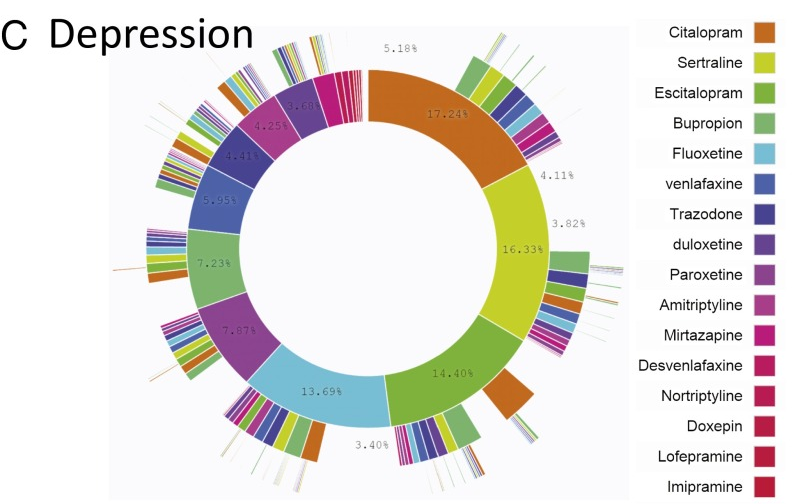
An even spread across first-line medications
Citalopram, sertraline, escitalopram, fluoxetine and bupropion all common
Changes tend to stay within the same drug class
12 How unique is a pathway?
Proportion of patients whose 3-year pathway is shared with no one else in any data source
| Disease | Unique pathway |
|---|---|
| Type 2 diabetes | 10% |
| Hypertension | 24% |
| Depression | 11% |
ImportantPatients like me?
Among 250 million patients, almost 1 in 4 people treated for hypertension have no “patient like me” in terms of their treatment sequence
May reflect trial-and-error treatment of diseases that are hard to control
We will see shortly that the number of possible pathways explodes combinatorially
NoteFrom study to tool
The 2016 study used a purpose-built query; the same ideas are now generalized in the TreatmentPatterns HADES package
13 Using TreatmentPatterns
TreatmentPatterns (link) computes pathways from any set of cohorts in three steps
Define cohorts: with ATLAS or
Capr, instantiate withCohortGeneratorcomputePathways(): builds patient-level pathways (stays on site)export(): aggregates into share-able results with minimum cell counts
14 Three types of cohorts
Target (required): the people and time-window of interest; usually a disease
Event (at least one): the treatments that may occur during the target cohort
Exit (optional): events that end a pathway, like death
| cohortId | cohortName | type |
|---|---|---|
| 1 | Viral sinusitis | target |
| 2 | Acetaminophen | event |
| 3 | Amoxicillin | event |
| 4 | Aspirin | event |
| 5 | Death | exit |
Research question: What is the order of treatments during an infection?
15 All you need is a cohort table
It does not matter how the cohorts are made (ATLAS, Capr, raw SQL)
| cohort_definition_id | subject_id | cohort_start_date | cohort_end_date |
|---|---|---|---|
| 1 | 1 | 2020-01-01 | 2020-12-31 |
| 2 | 1 | 2020-02-04 | 2020-06-27 |
| 3 | 1 | 2020-07-03 | 2020-08-12 |
| 4 | 1 | 2020-08-30 | 2020-11-29 |
| 1 | 2 | 2020-03-01 | 2020-10-30 |
| 2 | 2 | 2020-05-04 | 2020-06-27 |
| 4 | 2 | 2020-10-03 | 2020-10-12 |
ImportantCohorts carry the clinical logic
- Start and end dates of event cohorts define the treatment eras
- Exit strategy and era-collapsing choices in the cohort definition matter (a lot)
16 Which events count?
minEraDuration: events shorter than this (in days) are ignored
filterTreatments: which occurrences enter the pathway
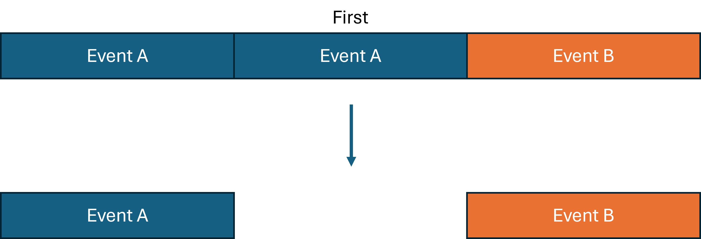
"First": first occurrence of each event
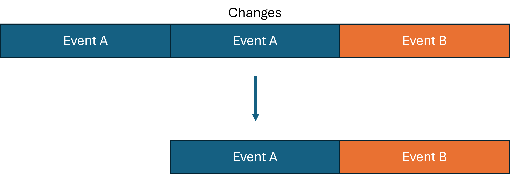
"Changes": only when the treatment changes
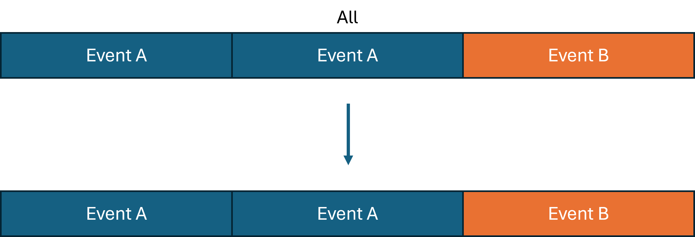
"All": every event
17 Collapsing repeated events
With filterTreatments = "All", eraCollapseSize merges repeats of the same event separated by a small gap
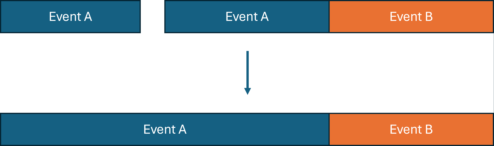
18 Combinations
When two events overlap for at least combinationWindow days, the overlap becomes a combination event
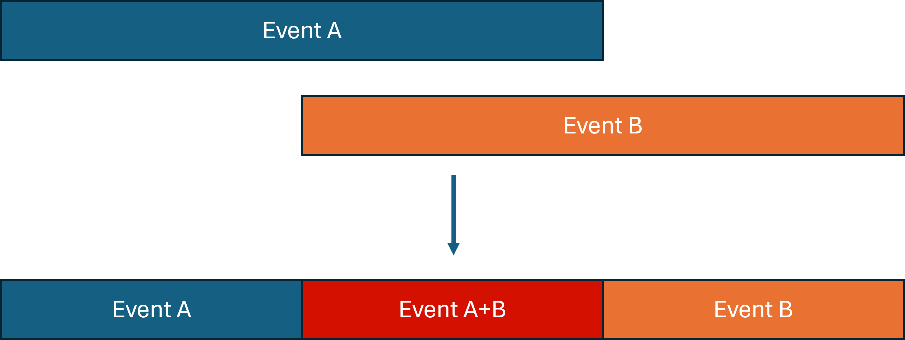
Two records become three: A, A+B, B
minPostCombinationDurationthen drops any left-over pieces that are too short
computePathways(
cohorts = cohorts,
cohortTableName = "cohort_table",
cdm = cdm,
combinationWindow = 30,
minPostCombinationDuration = 30)19 Switches
When the overlap is shorter than combinationWindow, the transition is a switch
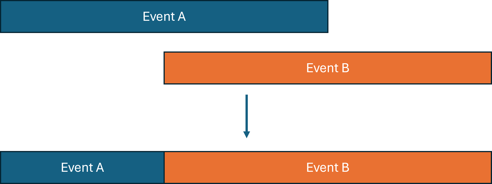
overlapMethod controls the patient-level dates
"truncate": end the first event when the second starts"keep": leave both start and end dates intact
Note
The aggregate pathways are (almost always) the same; the choice matters when you examine patient-level records and durations
20 A worked example
One subject, three treatments, lasting 19, 37 and 12 days
2: -------------------
3: -------------------------------------
4: ------------Treatments 3 and 4 overlap for 8 days. With a 5-day combinationWindow
2: -------------------
3: -----------------------------
3+4: --------
4: ----minPostCombinationDuration = 10drops both3+4and4: pathway2-3minPostCombinationDuration = 5keeps3+4: pathway2-3-3+4
TipRules of thumb
minPostCombinationDuration <= minEraDurationcombinationWindow >= minEraDuration
21 Acute versus maintenance therapy
splitEventCohorts and splitTime divide an event into an acute phase (first splitTime days) and a therapy phase (the remainder)
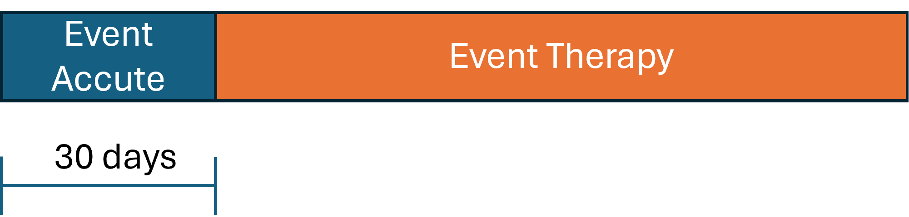
outputEnv <- computePathways(
cohorts = cohorts,
cohortTableName = "cohort_table",
cdm = cdm,
splitEventCohorts = c(1, 2),
splitTime = 30)22 Event windows
Which part of the target cohort do we look in? Anchors ("startDate" or "endDate") plus offsets in days
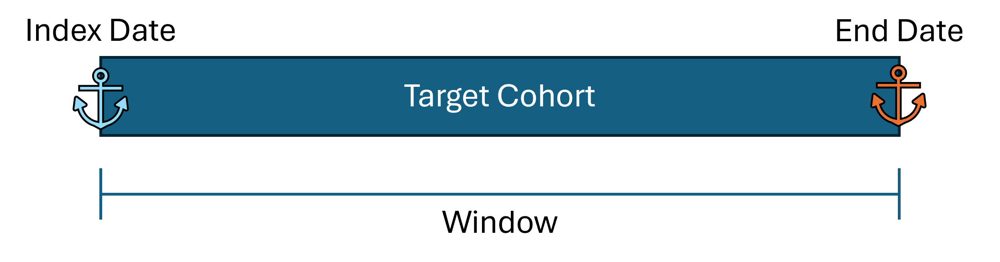
Default: start to end
windowStart = 0, windowEnd = 0
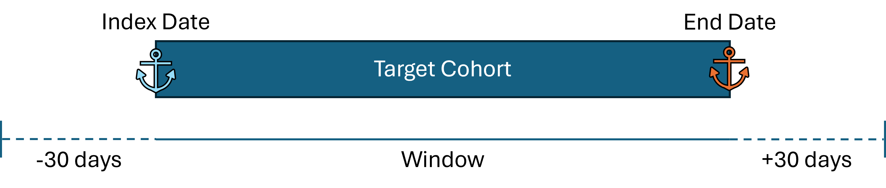
Widen by 30 days
windowStart = -30, windowEnd = 30
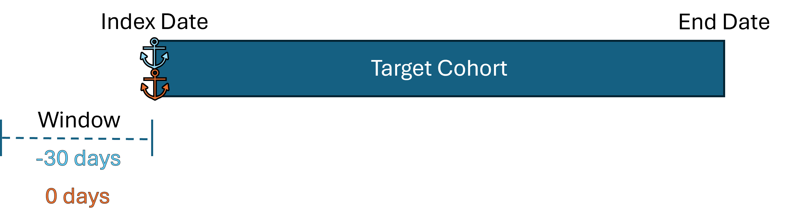
30 days before index
both anchors "startDate", windowStart = -30
outputEnv <- computePathways(
cohorts = cohorts,
cohortTableName = "cohort_table",
cdm = cdm,
startAnchor = "startDate", windowStart = -30,
endAnchor = "startDate", windowEnd = 0)23 All together
outputEnv <- computePathways(
cohorts = cohorts,
cohortTableName = "cohort_table",
cdm = cdm,
analysisId = 1,
description = "My Treatment Pathway analysis",
# Window
startAnchor = "startDate",
windowStart = 0,
endAnchor = "endDate",
windowEnd = 0,
# Acute / Therapy
splitEventCohorts = NULL,
splitTime = NULL,
# Events
minEraDuration = 7,
filterTreatments = "All",
eraCollapseSize = 3,
# Combinations
combinationWindow = 7,
minPostCombinationDuration = 7,
overlapMethod = "truncate",
# Pathways
maxPathLength = 10,
concatTargets = FALSE)maxPathLengthtruncates long pathwaysconcatTargets = TRUEjoins repeated target episodes (useful for chronic conditions)The result is an
Andromedaobject holding patient-level data
24 How many pathways are possible?
With \(n\) event cohorts and mono-therapies only
- \(n^n\) pathways of length \(n\); still \(n!\) without re-occurring treatments
5^5[1] 3125factorial(5)[1] 120Combinations make it worse: each non-empty subset of events is a possible treatment
n <- 5
c(total = 2^n - 1, combinations = 2^n - (n + 1))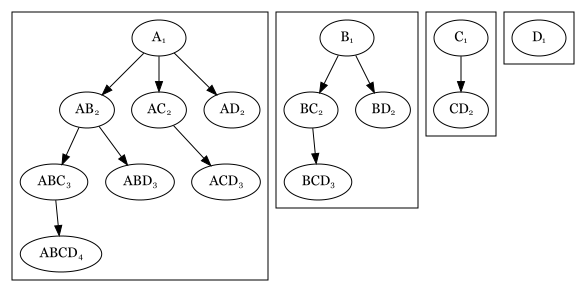
Total possible events: \(2^n - 1\)
Of which combinations: \(2^n - (n + 1)\)
total combinations
31 26
ImportantSubjects get divided thinly across pathways
- Small target cohorts should not be considered
- Pathways with low counts should not be considered
- Explains why so many 2016 hypertension pathways were unique
26 What comes back
export() returns a TreatmentPatternsResults (R6) object
| Element | Content |
|---|---|
treatment_pathways |
each pathway and its frequency, by age group, sex and index year |
counts_age, counts_sex, counts_year |
cohort counts by stratum |
summary_event_duration |
duration statistics per event and per line of therapy |
metadata |
execution details (R, package and CDM information) |
Pathway notation
+is a combination:amoxicillin+clavulanate-is a switch:acetaminophen-penicillinv
Saving
results$saveAsCsv(path = tempdir())
results$saveAsZip(path = tempdir(), name = "tp-results.zip")
results$uploadResultsToDb(
connectionDetails = connectionDetails,
schema = "main", prefix = "tp_", overwrite = TRUE)27 Built-in graphics
results$plotSunburst() # inner ring: first treatment, moving outwards
results$plotSankey() # same data; "Stopped" marks the end of a pathway
results$plotEventDuration(minCellCount = 10) +
ggplot2::xlim(0, 100) # boxplots per event and line of therapyA line is a level in the sunburst or Sankey diagram
Duration plots also summarize all mono-events and all combination-events
28 Network studies via Strategus
TreatmentPatterns is a Strategus module, so a pathways analysis ships as a JSON specification
# Which cohorts are targets and events
cohorts <- data.frame(
cohortId = cohortSet$cohortId,
cohortName = cohortSet$cohortName,
type = c(rep("event", 7), "target"))
tpMod <- Strategus::TreatmentPatternsModule$new()
tpSpec <- tpMod$createModuleSpecifications(
cohorts = cohorts,
minEraDuration = 30,
combinationWindow = 30,
minPostCombinationDuration = 30)
analysisSpec <- Strategus::createEmptyAnalysisSpecificiations() |>
Strategus::addSharedResources(cohortSharedResource) |>
Strategus::addCohortGeneratorModuleSpecifications(cgSpec) |>
Strategus::addTreatmentPatternsModuleSpecifications(tpSpec)
Strategus::execute(
analysisSpecifications = analysisSpec,
executionSettings = executeSettings,
connectionDetails = connectionDetails)
Tip
This is the 2016 PNAS study design, now as a reusable module
29 Extended example: hypertension in U.S. Veterans
How are Veterans with newly diagnosed hypertension treated in the VA?
Data: VA Corporate Data Warehouse in the OMOP CDM (via VINCI)
Target: first diagnosis of essential hypertension, followed for 5 years
Events: 5 major antihypertensive drug classes (from the LEGEND-HTN study)
Tools:
Capr,CohortGeneratorandTreatmentPatterns
Note
Code is shown as executed inside the VA; results are aggregate with a minimum cell count of 10
30 Cohort: Veterans with hypertension
library(Capr) # Part of `HadesProject`
essentialHypertension <- cs(
descendants(320128),
name = "Essential hypertension")
targetCohortDuration <- 5 * 365 # 5 years (approximately)
hypertensionCohort <- cohort(
entry = entry(
conditionOccurrence(essentialHypertension,
firstOccurrence()),
observationWindow = continuousObservation(priorDays = 365)),
exit = exit(
endStrategy = fixedExit("startDate", targetCohortDuration)))
hypertensionCohort <- list(HTN = hypertensionCohort) # Add name31 LEGEND-HTN exposure definitions
library(dplyr)
allExposures <- read.csv(
file.path(getwd(), "LegendHtnExposuresOfInterest.csv")) |>
filter(indicationId == "Hypertension")
drugs <- allExposures |> filter(type == "Drug") |>
select(name, conceptId) # Standard concepts (RxNorm)
classes <- rbind(
allExposures |> filter(type == "Drug major class"),
allExposures |> filter(name == "Thiazide or thiazide-like diuretics")) |>
filter(!(name %in% c("Alpha-1 blockers", "Direct vasodilators", "Diuretics"))) |>
select(name, shortName, includedConceptIds)ACE inhibitors
benazepril, captopril, enalapril, fosinopril, lisinopril, moexipril, perindopril, quinapril, ramipril, trandolapril
benazepril, captopril, enalapril, fosinopril, lisinopril, moexipril, perindopril, quinapril, ramipril, trandolapril
Angiotensin receptor blockers
azilsartan, candesartan, eprosartan, irbesartan, losartan, olmesartan, telmisartan, valsartan
azilsartan, candesartan, eprosartan, irbesartan, losartan, olmesartan, telmisartan, valsartan
Beta blockers
acebutolol, atenolol, betaxolol, bisoprolol, carvedilol, labetalol, metoprolol, nadolol, nebivolol, penbutolol, pindolol, propranolol
acebutolol, atenolol, betaxolol, bisoprolol, carvedilol, labetalol, metoprolol, nadolol, nebivolol, penbutolol, pindolol, propranolol
Calcium channel blockers
amlodipine, diltiazem, felodipine, isradipine, nicardipine, nifedipine, nisoldipine, verapamil
amlodipine, diltiazem, felodipine, isradipine, nicardipine, nifedipine, nisoldipine, verapamil
Thiazide or thiazide-like diuretics
chlorthalidone, hydrochlorothiazide, indapamide, metolazone
chlorthalidone, hydrochlorothiazide, indapamide, metolazone
32 Cohorts: HTN treatments
txConceptSets <- mapply(
\(name, ids)
cs(name = name, descendants(as.integer(strsplit(ids, ";")[[1]]))),
classes$shortName, classes$includedConceptIds)
txCohorts <- lapply(
txConceptSets,
\(x) cohort(
entry = entry(drugExposure(x), qualifiedLimit = "First"),
attrition = attrition( # Limit data pull
"With prior HTN dx" = withAll(
atLeast(1,
conditionOccurrence(essentialHypertension),
duringInterval(eventStarts(-1 * targetCohortDuration, 0))))),
exit = exit(endStrategy = drugExit(x)), era = era(eraDays = 30L)))
cohortDefinitionSet <- do.call( # Pass list-entries as arguments
makeCohortSet, c(hypertensionCohort,txCohorts))
ImportantDesign choices live in the cohorts
- One event cohort per drug class (not ingredient, as in 2016)
- Exposure ends when the drug is stopped (
drugExit); gaps up to 30 days are bridged (eraDays)
33 Connection details
Inside the VA
connectionDetails <- DatabaseConnector::createConnectionDetails(
dbms = "sql server",
server = Sys.getenv("VINCI_CDW_SERVER"))
cdmDatabaseSchema <- "CDW_OMOP.OMOPV5"
cohortDatabaseSchema <- "VINCI_OMOP.scratch_msuchard"
cohortTableNames <- CohortGenerator::getCohortTableNames(
cohortTable = "demo_patterns")
TipTry it yourself
The same code runs unchanged against our synthetic data
connectionDetails <- DatabaseConnector::createConnectionDetails(
dbms = "duckdb",
server = file.path(getwd(), "data", "synthetic.duckdb"))
cdmDatabaseSchema <- "main"
cohortDatabaseSchema <- "main"34 Cohort generation
CohortGenerator::createCohortTables(
connectionDetails = connectionDetails,
cohortDatabaseSchema = cohortDatabaseSchema,
cohortTableNames = cohortTableNames)
cohortsGenerated <- CohortGenerator::generateCohortSet(
connectionDetails = connectionDetails,
cdmDatabaseSchema = cdmDatabaseSchema,
cohortDatabaseSchema = cohortDatabaseSchema,
cohortTableNames = cohortTableNames,
cohortDefinitionSet = cohortDefinitionSet)CohortGenerator::getCohortCounts(
connectionDetails = connectionDetails,
cohortDatabaseSchema = cohortDatabaseSchema,
cohortTable = cohortTableNames$cohortTable) |>
inner_join(cohortDefinitionSet |>
select(cohortId, cohortName)) |> arrange(cohortId)| cohortId | cohortEntries | cohortSubjects | cohortName |
|---|---|---|---|
| 1 | 6,014,083 | 6,014,083 | HTN |
| 2 | 4,334,703 | 4,334,703 | ACEIs |
| 3 | 1,942,372 | 1,942,372 | ARBs |
| 4 | 3,754,042 | 3,754,042 | BBs |
| 5 | 3,640,086 | 3,640,086 | CCBs |
| 6 | 3,554,286 | 3,554,286 | TDs |
- Over 6 million Veterans with hypertension
35 Run TreatmentPatterns
library(TreatmentPatterns) ## Part of `HadesProject`
patientLevelResults <- computePathways(
cohorts = cohortDefinitionSet |>
select(cohortId, cohortName) |>
mutate(type = case_when(cohortId == 1 ~ 'target',
TRUE ~ 'event')),
cohortTableName = cohortTableNames$cohortTable,
connectionDetails = connectionDetails,
cdmSchema = cdmDatabaseSchema,
resultSchema = cohortDatabaseSchema,
maxPathLength = 3)Cohort 1 (HTN) is the target; the 5 drug classes are events
Pathways are truncated at 3 steps
36 Saving and aggregating results
Andromeda::saveAndromeda(patientLevelResults, fileName = "computedPathways")
patientLevelResults <- Andromeda::loadAndromeda("computedPathways")shareableResults <- TreatmentPatterns::export(
andromeda = patientLevelResults,
minCellCount = 10)
Important
patientLevelResultsnever leaves the VAshareableResultsholds only aggregate statistics
37 Sunburst plot
shareableResults$plotSunburst(legend = TRUE)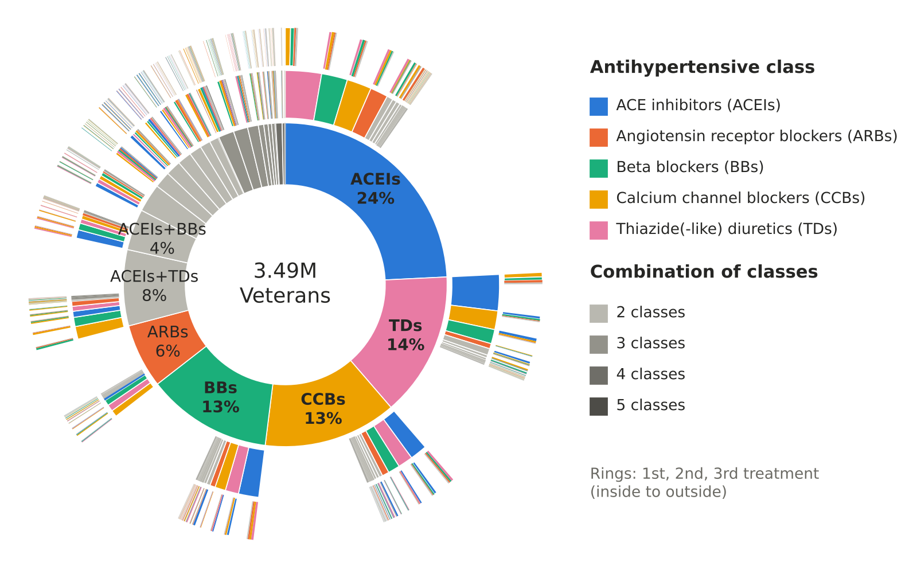
About 3.5 million Veterans with at least one treatment in the 5-year window
ACE inhibitors lead first-line therapy (24%); no class dominates
29% start on a combination of classes (most often ACEIs+TDs)
38 Sankey plot
shareableResults$plotSankey()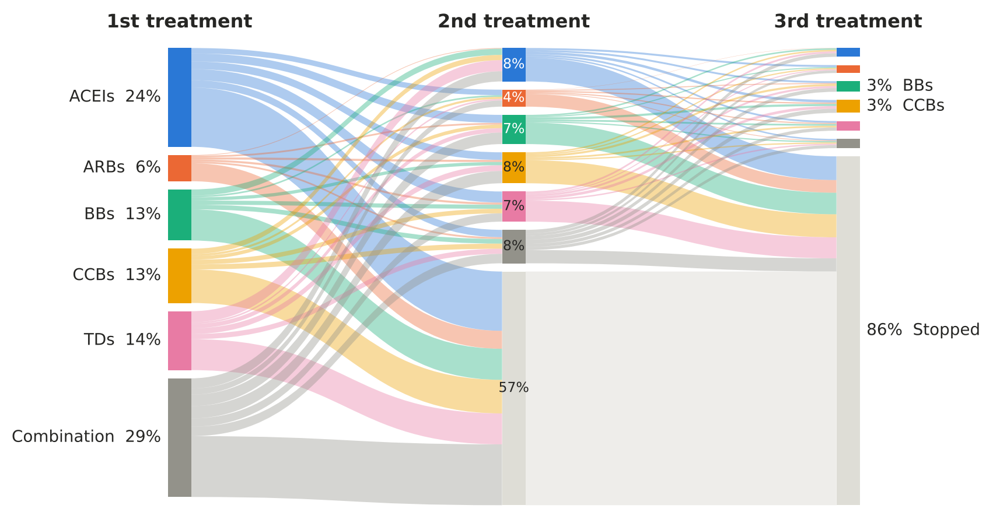
All combinations are grouped here for legibility
57% have a single-step pathway; 15% reach a third step
“Stopped” marks the end of the pathway, not necessarily of treatment
39 Most common pathways
| Pathway | Veterans | % of pathways |
|---|---|---|
| ACEIs | 507,121 | 14.5 |
| CCBs | 286,842 | 8.2 |
| BBs | 266,029 | 7.6 |
| TDs | 264,470 | 7.6 |
| ARBs | 153,509 | 4.4 |
| ACEIs+TDs | 151,086 | 4.3 |
| TDs-ACEIs | 69,528 | 2.0 |
| ACEIs+BBs | 67,801 | 1.9 |
| ACEIs-TDs | 67,329 | 1.9 |
| ACEIs-BBs | 50,915 | 1.5 |
Recall:
+is a combination and-is a switchThe top 10 pathways cover just over half of treated Veterans; thousands of rarer pathways make up the rest
40 Event durations
library(ggplot2)
yr <- 365.25
shareableResults$plotEventDuration() +
coord_cartesian(xlim = c(0, 1) * yr) + scale_x_continuous(
labels = \(x) x / yr, breaks = c(0, 0.5, 1) * yr) +
xlab("time (years)")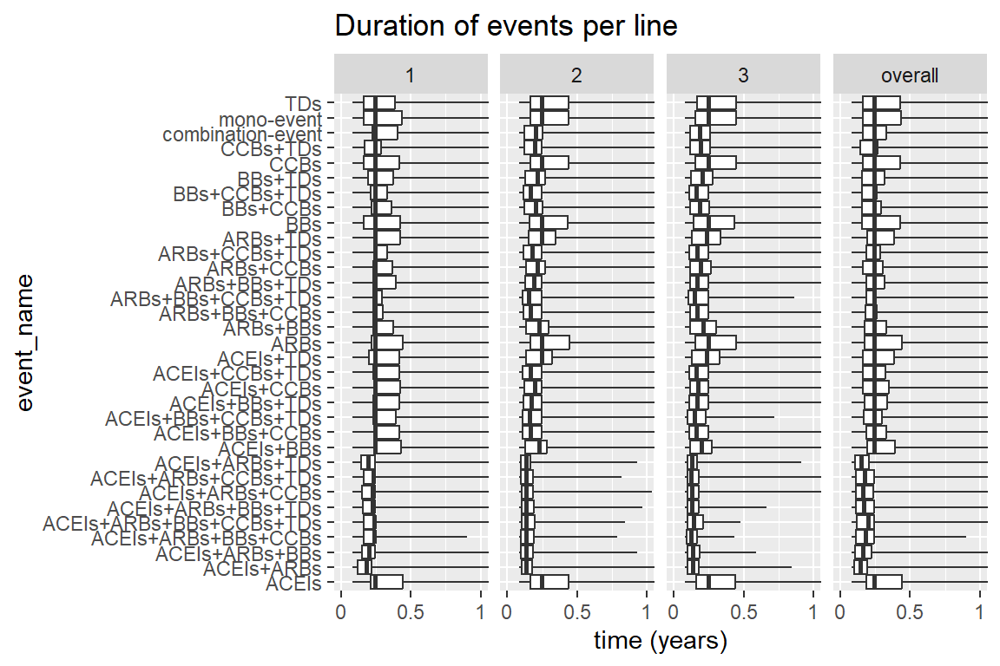
41 Many underlying statistics
gt::gt(
shareableResults$summary_event_duration |>
select(event_name, event_count, duration_q1, duration_median, duration_q2)) |>
gt::tab_options(
data_row.padding = gt::px(4))Selected rows (overall, across all lines; durations in days)
| event_name | event_count | duration_q1 | duration_median | duration_q2 |
|---|---|---|---|---|
| mono-event | 4,109,350 | 60 | 90 | 160 |
| combination-event | 1,402,835 | 60 | 90 | 121 |
| ACEIs | 1,207,762 | 69 | 90 | 161 |
| ARBs | 438,353 | 63 | 90 | 162 |
| BBs | 777,688 | 58 | 90 | 156 |
| CCBs | 839,979 | 59 | 90 | 158 |
| TDs | 845,568 | 60 | 90 | 157 |
| ACEIs+TDs | 333,956 | 60 | 90 | 141 |
| ACEIs+BBs | 185,740 | 70 | 90 | 144 |
| ACEIs+ARBs | 15,675 | 37 | 53 | 70 |
TipReading the output critically
- Median of 90 days almost everywhere: consistent with 90-day supplies
- ACEIs+ARBs is rare and short: more likely an overlap while switching than a true combination
- Would a longer
combinationWindowchange the picture?
42 Then and now
| Hripcsak et al, 2016 | VA example | |
|---|---|---|
| Data | 11 sources, 4 countries | 1 source (VA) |
| Target | first relevant drug exposure | first hypertension diagnosis |
| Follow-up | 3 years, continuous treatment required | 5 years, no treatment requirement |
| Events | ingredients | 5 drug classes |
| Sequence | changes and additions, in order | switches (-) and combinations (+) |
| Tool | study-specific query | TreatmentPatterns |
Important
Pathways are only comparable when their definitions are; standardized tools make these definitions explicit and repeatable
43 Quick review
Treatment pathways characterize what happens in practice: first-line choice, switches, additions and durations
Hripcsak et al (2016) standardized pathways across 11 data sources and 250 million patients
- consistency is increasing, but heterogeneity remains
TreatmentPatternsgeneralizes the approach to any target and event cohortscomputePathways()works at the patient-level;export()returns share-able aggregates- era, combination and window settings drive the results
The number of possible pathways explodes, so mind small cohorts and small cells